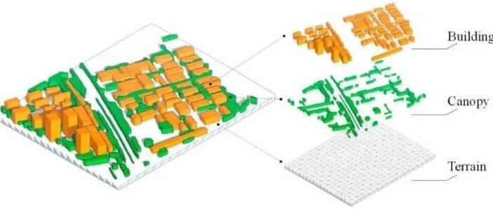

新论文：倾斜摄影点云+深度学习=城市风环境自动化模拟

DOI：https://doi.org/10.3390/rs13122383
引言

昨天居委会又在尽职尽责的通过各种渠道发布暴雨和大风黄色预警，每个人都在紧张中等待着狂风暴雨的到来。如果可以提前预知城市风灾的薄弱部位，那对城市防灾应急就有着非常重要指导意义。为了这个科研目标，课题组顾栋炼同学辛辛苦苦的逐个测量了清华校园内19740棵树木的位置、高度、树冠大小等信息，才完成了他的博士学业。显然，迫切需要研发高效的城市风环境模拟方法，让大家在追求PhD的过程中避免出现Permanent Head Damage。
00
太长不看版本
计算流体力学（CFD）是城市规划与建筑工程风环境分析的重要模拟方法。对于区域尺度的风环境模拟，CFD需要无几何缺陷且低复杂度的三维模型，而建立此类模型通常依赖于静态的GIS数据和人工，耗费大量时间并且难以在模拟中反映目标区域的当前建成环境信息。因此，本文提出了一个城市风环境自动化模拟框架，显著提升了CFD建模的效率。框架以一个融合二维和三维网络的深度学习方法提升了CFD模型关键要素识别的准确性，并建立了几何模型。以深圳市某区域演示了本方法的应用。
01
研究背景
风环境是城市物理环境的重要组成，CFD则是风环境分析的重要方法，广泛应用于研究城市风场对于建筑、树木和行人等的影响。
对于CFD模拟，建模是第一步也是重要的一步。对于一些城市，并不具备反映当前环境信息的三维模型，一般需要通过GIS数据建立。然而，一方面GIS数据可能过时或难以公开获取，另一方面GIS通常不包括CFD需要的植被几何数据（参见相关论文：新论文：城市尺度树木风灾破坏近实时评估：方法框架及清华园案例应用），因此当有分析需求尤其是紧急需求时（参见相关论文：《工程力学》：新冠肺炎疫情临时医院排风的环境影响快速模拟方法），需要引入大量人工以充分反映CFD模拟目标区域的建成环境信息。
无人机的测绘技术为获取大量实时的建成环境信息提供了可能。其中，无人机倾斜摄影技术以其可操作性和较低的成本成为获取城市建成环境三维数据的重要方式。基于此，本文建立了一个基于倾斜摄影点云的城市风环境模拟框架，提出了一种融合二维和三维网络的深度学习方法，对CFD需要的关键建成要素即建筑和树木进行语义分割，进而对地面、建筑和树冠流体区域分别建立其几何模型，用于CFD模拟。
02
模拟框架
如图1所示，本文提出的城市风环境自动模拟框架主要由四个模块组成：（1）数据获取与前处理；（2）基于深度学习的点云分割；（3）几何三维重建；（4）CFD建模与仿真。
（1）模块1：数据获取与前处理
本文建模需要的基础数据通过倾斜摄影测量获取。倾斜摄影可以获得具有RGB颜色信息的稠密点云。相比基于GIS建模的方法，此种方法可以快速方便地获取反映目标区域当前建成环境信息的三维数据，为建模提供基础数据支持。
（2）模块2：基于深度学习的点云分割
考虑树冠影响的城市风环境CFD仿真需要地面、建筑和树冠流体区域的模型并赋予不同物理参数。为了建立三者各自的模型，首先需要对点云进行语义分割，提取地面、建筑和树冠三类。本文首先分离地面点云，之后应用深度学习进行点云语义分割。
（3）模块3：几何三维重建
在分别获取了地面、建筑和树冠的点云之后，利用几何和拓扑特征，针对地面、建筑和树冠流体区域分别建立适合CFD仿真的几何模型。
（4）模块4：CFD建模与仿真
将生成的几何模型导入CFD仿真软件，利用自动化网格生成功能进行网格剖分。对地面、建筑和树冠流体区域，使用自动化脚本分别赋予不同的物理参数，开展城市风环境CFD仿真分析。

图1 城市风环境自动模拟框架
03
基于深度学习的点云分割
（1）地面过滤
地面与建筑屋顶具有类似的水平表面，容易对三维语义分割造成不必要的混淆。针对倾斜摄影获取的点云，本文使用Cloth Simulation Filter提取地面点云，方法使用了开源软件CloudCompare中的插件实现。
（2）分离建筑和树冠
对于模型语义问题，一般方法需要专业人员参与，难以实现自动化，而基于传统机器学习方法如支持向量机等则需要预先计算逐点特征，效率较低且局部特征的搜索范围有限。近年来，深度学习技术在语义分割领域得到了广泛应用。对于城市建成环境，使用二维语义分割网络确定三维点云语义时，由于没有高度信息，在对象边缘位置的预测结果准确性较差，同时直接将投影面一定范围内的点云判断为树冠时，将会包含树冠以下不适宜纳入CFD模型的其他要素，如树干等。对于三维语义分割网络，当点云点数较多时对于显存的消耗巨大，对于城市区域尺度的场景在输入网络前一般需要对点云进行下采样，因此对于局部纹理特征的捕捉具有局限性导致结果不准确。另外，当使用倾斜摄影航空照片计算重建生成的点云时，存在物体阴影遮挡等造成的低质量部分，在高度信息上存在误差，进而影响三维预测结果。为了弥补单一基于二维或三维的方法在城市环境点云分割方面的不足，本文融合两种方法以发挥各自优势。二维使用图像语义分割网络DeepLabv3 ，三维使用点云分类和语义分割网络PointNet++ 。如图2所示，具体方法包括四个步骤：

图2 融合二维和三维深度学习网络的点云语义分割
Step 1：数据的准备与标注
针对稠密点云，采用人工框选标注方式标注逐点的真实标签。将数据集划分为训练集和测试集，作为深度学习训练的基础。
Step 2：二维图像的生成
将稠密点云投影到二维平面，将二维点云栅格化为图片。
Step 3：基于二维图像的特征提取
对二维图像数据进行数据增强。使用训练集数据训练DeepLabv3网络，输出每个像素的分类概率预测向量，向量长度为包含的类别数。
Step 4：特征组合与基于三维点云的类别预测
将稠密点云进行下采样以满足显存需求。根据点云坐标，确定点和二维图片像素的关系，将每个像素的分类概率预测向量匹配给像素栅格内的每个点。组合后的输入包含三维坐标，以及包含颜色、法向量、二维预测概率和相对高程在内的10维特征向量。仅保留过滤后的非地面点云进行训练，PointNet++可以给出每个点的类别标签预测结果。
本方法具有以下三方面的优势：
（1）将二维预测结果作为三维预测的输入特征向量的一部分，充分发挥二维数据稠密纹理特征的优势，弥补了三维深度学习网络由于设备能力限制而必须抽稀，导致丢失局部结构的缺点。
（2）通过三维深度学习网络强化了高度信息的重要性，改善了二维深度学习网络在对象边缘处准确性不足的问题。
（3）二维深度学习所输入图像并非无人机倾斜摄影照片，而是点云投影栅格化的图像，不需要额外关注倾斜摄影照片与三维点云的映射关系，仅需对点云进行一次数据标注，避免了在二维照片上重新标注的繁重工作。
04
几何三维重建
（1）地面
过滤的地面点云可以用来生成地面数字表面模型。本文使用高斯过程回归拟合规则矩形网格的地面模型。
（2）建筑
如图3所示，建筑三维重建主要包括三个步骤：(a) 采用RANSAC算法提取点云中建筑的屋顶平面；(b) 采用alpha shape算法获取建筑屋顶平面的轮廓线；(c) 根据建筑的几何和拓扑特征改善边缘轮廓。
（3）树冠流体区域
对城市中逐个树木建模对CFD计算而言工作量太大且无必要。针对获取的树冠点云，首先过滤掉离群点，之后采用DBSCAN算法对点云基于欧氏距离进行聚类分为若干组块，最后采用alpha shape算法获取各个树冠点云组块的二维边缘。
（4）后处理
将生成的地面、建筑和树冠三维模型进行组合，由于可能存在重叠，使用布尔运算保证模型几何协调。
篇幅所限，感兴趣的读者可以参考论文原文。

图3 建筑三维重建流程
05
案例研究
（1）案例描述
为了验证本文提出的城市风环境自动化模拟框架的有效性，本节选择了深圳市某区域进行分析和讨论。区域内建筑密集，密集住宅区、工业区、商业区、老旧建筑区等各类建筑混杂，行道树等植被分布广泛。密集的建筑群和众多的树木植被对城市风环境CFD仿真的建模提出了挑战。通过无人机倾斜摄影，生成了目标区域的点云，如图4所示。过滤地面后的数据进行标注，如图5所示。

图4 倾斜摄影点云

图5 逐点类别标签
（2）点云分割
过滤掉地面之后，点云随机划分为训练集和测试集。分别使用支持向量机(SVM)、随机森林(RF)、DeepLabv3、 PointNet++和本文提出的融合方法，对点云分类预测精度进行比较。点云分类预测精度由precision、recall和F1 score衡量，表1展示了所有测试集瓦片平均的指标。
以局部的一栋楼及其周围环境为例，原色点云、真实标签和五种方法的预测结果的侧视图和俯视图如图6所示。
表1 不同分类方法在测试集上取得的平均指标


图6 原色点云、真实标签和五种方法的预测结果
可以看出：
（a）SVM没能识别杂项与建筑、树冠的区别，导致杂项被预测为建筑或树冠，建筑和树冠的precision比较低；
（b）尽管预测树的数量对结果提升有限，RF相比SVM预测能力稍强，但存在预测离群点散乱分布，各个类别的点明显交融，不利于后续三维建模；
（c）DeepLabv3由于没有高度信息，在物体边缘精度较低，倾向于将边缘点预测为杂项，导致杂项的recall较高但建筑、树冠的recall明显低于各自的precision；
（d）PointNet++对于建筑预测结果较好，但由于树冠区域点云的法向量分布复杂多变，对于树冠的预测precision影响较大，可能导致后续建模依赖的树冠点云不完整；
（e）本文方法通过融合DeepLabv3和PointNet++，改善了物体边缘预测精度不高，树冠点云特征复杂多变或由于遮挡生成质量不高的问题。方法对于杂项的预测结果明显提升，对于建筑和树冠的预测平衡了precision和recall，取得了较好的结果，为三维建模提供准确的点云。
（3）三维重建
为充分展现三维建筑和植被对流场的复杂影响，选取建筑、树木较为密集的局部区域进行三维重建和CFD分析。如图7所示，模型满足CFD计算的复杂度需求，且一定程度保留了对象的几何特征。

图7 目标区域的地面、建筑和树冠流体区域的三维模型
（4）CFD模拟
CFD计算的边界条件、流体和树木模型等采用城市区域风环境计算的主流方法。在此基础上，本文分析了两个工况风场，即全年主导风向工况和热带风暴工况，结果以不同高度处的风速、风压和空气龄展示。图8展示了全年主导风向工况下的人行高度空气龄情况。
篇幅所限，对其余分析结果感兴趣的读者可参考原文。

图8 1.5 m人行高度的空气龄（NNE 2.1 m/s）
06
结论
CFD仿真是城市风环境分析的重要工具。准确而高效的CFD仿真需要包含地形、建筑和植被在内的无几何缺陷且低复杂度的城市三维模型。本文提出了一种基于倾斜摄影点云和深度学习的城市风环境自动模拟框架。通过深圳市某区域的案例研究演示了该框架的实用性。主要结论如下：
（1）相比传统的基于GIS建模方法，基于倾斜摄影点云的自动化方法可以反映目标区域当前的建成环境，同时极大程度减少人工成本。
（2）相比基于SVM、RF和单一深度学习网络的点云语义分割方法，本文提出的融合二维和三维深度学习网络的方法可以取得更高的准确性，为建模提供更准确的点云分类结果。
（3）本文实现的地形、建筑和树冠流体区域建模方法可以保留对象的重要几何信息同时降低模型复杂度，符合CFD仿真的需要。
本文成果使用数据获取成本较低的无人机搭载的视觉感知手段建立城市建成环境模型，应用于城市物理环境的仿真模拟，可以在数字孪生城市的要素建模工作中，为解决城市更新速度快的难题提供思路。

孙楚津
---End---
相关研究
专著
人工智能与机器学习
城市灾害模拟与韧性城市
高性能结构与防倒塌
新论文：抗震&防连续倒塌：一种新型构造措施
长按识别二维码，关注我们的科研动态